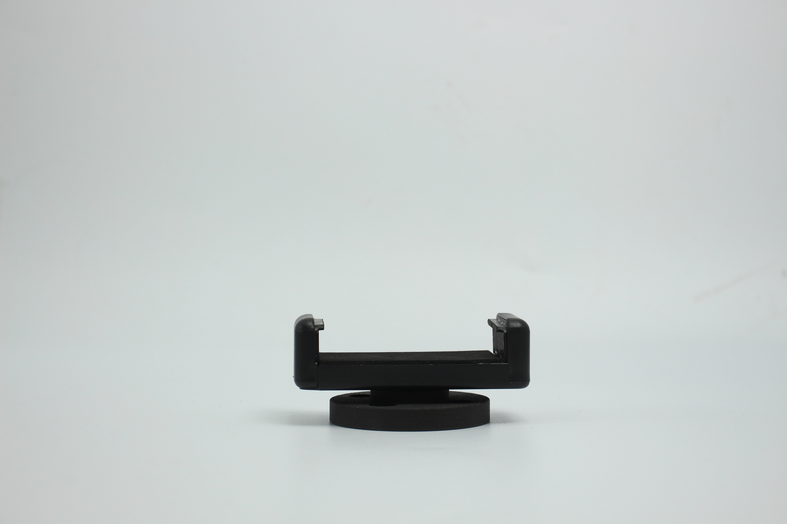
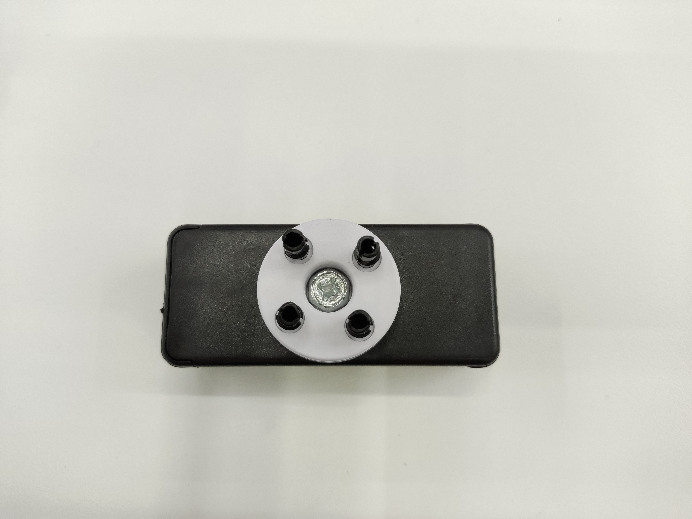
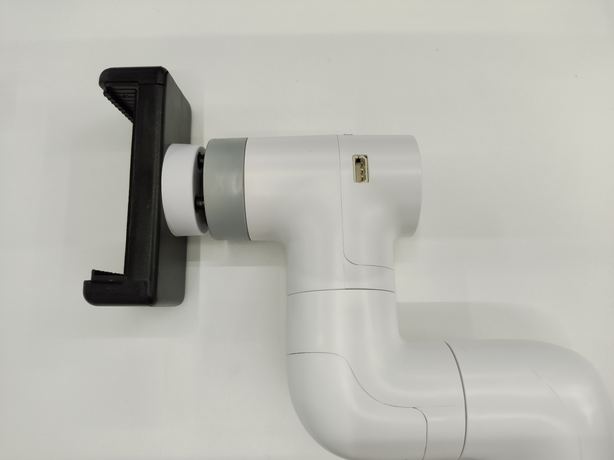

myCobot 手机夹持器
适配型号：ER myCobot 280 系列， ER myPalletizer 260 系列， ER mechArm 270 系列
产品图示


规格说明：
| 名称 | myCobot 手机夹持器 |
|---|---|
| 型号 | myCobot_PhoneHolder_J6 |
| 材料 | ABS 注塑 |
| 尺寸 | 直径 34*10 |
| 颜色 | 白+黑 |
| 夹持重量 | 50g |
| 使用寿命 | 两年 |
| 固定方式 | 乐高连接件 |
| 使用环境要求 | 常温常压 |
| 适用设备 | ER myCobot 280 系列 ER mechArm 270 系列 ER myPalletizer 260 系列 |
myCobot 手机夹持器： 夹持手机或物品时使用
简介
- 适用于拍摄等需要物理夹持的设备，可夹持多种手机，结构简单，易于安装拆卸。
适用物体
拍摄设备
安装
将乐高连接件插入夹持器孔位中： 
将安装好连接件的夹持器插入机械臂末端
使用
将夹持器拉开，放入拍摄设备后松手，确认设备固定后即可使用。